On this page
The Middle East’s building challenge is a delivery problem: chronic schedule slippage, cost inflation, labor scarcity, design churn, and harsh climate routinely derail conventional, on‑site construction. This paper proposes a dual‑track, industrialized response for the UAE and wider region that combines two complementary prefabrication systems—Precast Concrete (PC) and Modular Integrated “BOX” technologies—each mapped to program intent and time horizons. PC leverages factory‑cast structural elements for rapid, code‑familiar assembly and century‑scale durability, suiting permanent housing and large, repeatable stock. BOX delivers fully finished volumetric units—with structure, MEP, and interiors pre‑integrated—for plug‑and‑play installation, minimal site exposure, and relocatability—ideal for student and staff housing, youth apartments, micro‑villas/ADUs, and rapid deployments. Across case templates, we show how both systems compress timelines (e.g., <24‑hour unit installs for BOX; ~2–3 weeks for PC dwellings), cut on‑site labor and weather risk, stabilize costs via industrialized manufacturing, and raise quality through factory QA. Technical attributes—high thermal performance, robust fire/seismic behavior, and standardized interfaces—translate into measurable ESG gains and better long‑term maintainability. The result is not a single technology bet but a portfolio: deploy BOX to meet urgent, mobile needs; deploy PC to anchor permanent, scalable neighborhoods. By aligning procurement, permitting, and design to these industrial logics, governments can convert policy urgency into habitable square meters—faster, safer, and at reliable quality—while preserving flexibility for future public priorities.
Challenges of Traditional Construction in the Middle East
We begin with a survey of challenges faced across the MENA region, establishing the background context for the rest of our investigations.
1. Widespread Project Delays
- Over 82% of construction projects in the MENA region experience delays, far above the global average (Consultancy ME).
- Major infrastructure projects in the region are delayed by an average of 83% beyond original timelines (Consultancy ME).
- Developers in Dubai are increasingly bringing construction in-house to mitigate delay risks (Reuters).
2. Rising Construction Costs
- Construction costs in the UAE are expected to increase 2–5%, while in Saudi Arabia they could rise 5–7% due to inflation, material prices, and labor (FirstBit).
- Design changes and disputes are frequent, with claim amounts averaging 36% of project CAPEX (AGBI).
3. Labor Shortages & Supply Chain Disruption
- The Middle East construction sector faces shortages of skilled labor and mounting supply chain pressures (FirstBit).
- Many contractors struggle to maintain timelines and quality due to inconsistent supply of key materials.
4. Frequent Design Changes & Contractual Disputes
- Late-stage design changes are a key cause of disputes and delays, especially in rapidly initiated government housing programs (AGBI).
- The region reports among the world’s highest rates of design-related delays.
5. Adverse Climate Conditions
- The Middle East’s high heat, humidity, and occasional sandstorms create hazardous conditions for conventional construction (AON).
- These challenges result in higher health risks, poor working conditions, and frequent work stoppages.
Why Governments Are Turning to Prefabrication
Faced with increasing demand, tight timelines, and environmental challenges, Middle Eastern governments uniformly require housing solutions that are not only fast and cost-efficient but also scalable and climate-resilient. Prefabricated technologies offer a superior path forward and can be divided into two primary systems: Precast Concrete (PC) Construction and Modular Integrated Building Systems (Box Technology).
These two systems are complementary in addressing various project types and conditions. Both fall under the broader umbrella of industrialized, off-site construction, eliminating many inefficiencies of traditional on-site, customized building.
Precast Concrete (PC) is well-suited for long-term, permanent housing. It uses conventional concrete materials and benefits from strong regulatory familiarity in the Middle East. Its major advantage lies in lower unit cost and strong durability. However, PC is heavy and involves significant on-site construction—requiring foundations, installation teams, and sometimes extended transport timelines.
Modular (Box Technology) systems are nearly 100% factory-completed, including structure, interiors, and MEP systems. They use specially engineered lightweight concrete that reduces total structure weight and allows long-distance transport. Modular systems are fast to deploy with minimal labor, ideal for worker housing, youth accommodations, or other urgent needs. However, the specialized concrete and compact design create higher costs and some limitations in layout customization.
The biggest difference between the two technologies lies in on-site workload. In environments where speed, labor availability, or urban constraints are challenges—such as many Gulf nations—Box may be optimal. Where budget, scale, and long-term use are priorities, PC remains a powerful solution.
Our strategic offering of both technologies ensures flexibility. We help governments make the right decision based on timeline, labor conditions, housing type, and long-term infrastructure planning.
Key Characteristics of PC and Modular Technologies
PC Technology – Strengths:
- Strong regulatory familiarity and faster permitting
- High durability, low maintenance—ideal for suburban, permanent homes
- Efficient factory production, less weather impact on schedule
PC – Limitations:
- Requires on-site foundation and structure assembly
- Not reusable—less suitable for relocatable or temporary use cases
Modular Technology – Strengths:
- Almost 100% factory completion, including electrical, plumbing, interiors
- Minimal on-site construction, ideal for high-density or restricted areas
- Reusable in certain configurations—good for transitional housing
Modular – Limitations:
- Higher cost per unit than PC
- Some governments are still unfamiliar with permitting, requiring early coordination
Ultimately, we specialize in both PC and Modular prefab systems and can recommend the most suitable strategy for each project. Our team works end-to-end—from planning to execution—to deliver solutions that are fast, reliable, and aligned with national infrastructure priorities.
Modular Integrated Building Systems (BOX Technology)
Definition: BOX construction aka volumetric modular construction. Entire rooms or apartment “boxes” (3D volumetric units) are fabricated in factories, fully finished with structure + MEP[1] + interiors, then shipped and stacked onsite.
Functional Characteristics:
- Volumetric, Plug-and-Play: Whole apartments or building sections arrive complete with plumbing, HVAC, lighting, kitchens, and bathrooms pre-installed.
- Minimal On-Site Work: Only requires crane placement, interconnection of MEP risers, and exterior sealing.
- Extreme Speed: Buildings can be completed in weeks, with units installable in <24 hours per apartment.
- Quality Uniformity: Interiors are factory-standardized, leading to consistent finishes and reduced defects.
- Reuse & Mobility: Modules can sometimes be detached and relocated — useful for temporary housing or flexible institutional projects.
- Use Cases: Student housing, worker dormitories, affordable housing, micro-villas, hotels, and rapid-deployment housing.
Let us first review BOX Construction’s Targeted Advantages:
Government Requirement | BOX Construction Response |
Extreme Speed | Complete structure, MEP, and interior finishing in factory; units installed in <24 hours with plug-and-play connections. |
Plug-and-Play Simplicity | Pre-integrated bathrooms, kitchens, HVAC, and lighting; minimizes onsite integration risk. |
Youth-Focused Livability | Smart layouts, integrated storage/workspace, and enhanced insulation ideal for young professionals. |
Site Minimalism | Requires only crane placement and utility connections; optimized for dense or constrained sites. |
Precision & Aesthetics | Factory-crafted interiors ensure consistent quality and design across deployments. |
Reusability | Select modules are detachable and reusable, providing long-term asset flexibility. |
These advantages realize Box-type modular buildings as particularly suited for projects such as:
- Rapidly deployable youth housing in urban centers
- Corporate staff dormitories or site housing
- Student apartment complexes near university clusters
- Emergency or transitional housing requiring relocatability
Modular construction application Scenarios & Case Studies
Here we run through a wide range of use-cases of modular integrated building systems.
1. Government-Subsidized Housing (Public Rental / Joint Housing)
Modular solutions are already widely[2] used in permanent affordable housing — especially in government-supported initiatives. A typical 30–150m2 modular unit provides a balance of cost-efficiency, livability, and deployment speed, ideal for joint housing schemes.
Modular units have demonstrated suitability for:
- Urban community integration
- Large-scale rollout
- Long-term housing policies
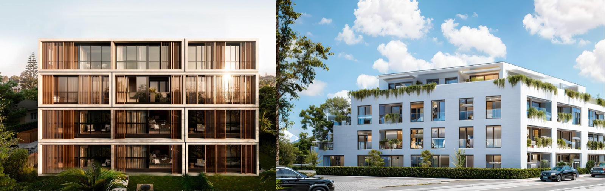
2. Student / Company Apartments
When designed specifically for youth and institutional tenants, modular (Box) buildings have shown a range of utility, such as:
- Campus and enterprise staff housing
- Youth apartments with flexible layouts
- Quick installation in suburban or industrial zones
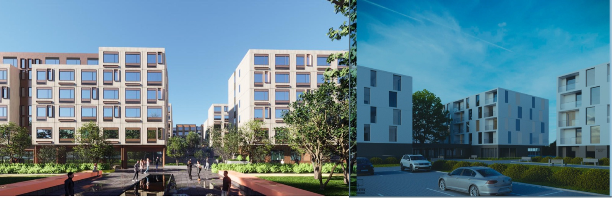
3. Government-Supported Micro Villas / ADU
Box systems also support the construction of small-footprint villa-style units used in:
- Remote living / ADU-type residences
- Single-family affordable housing
- Government subsidy pilots for rural or mobile housing
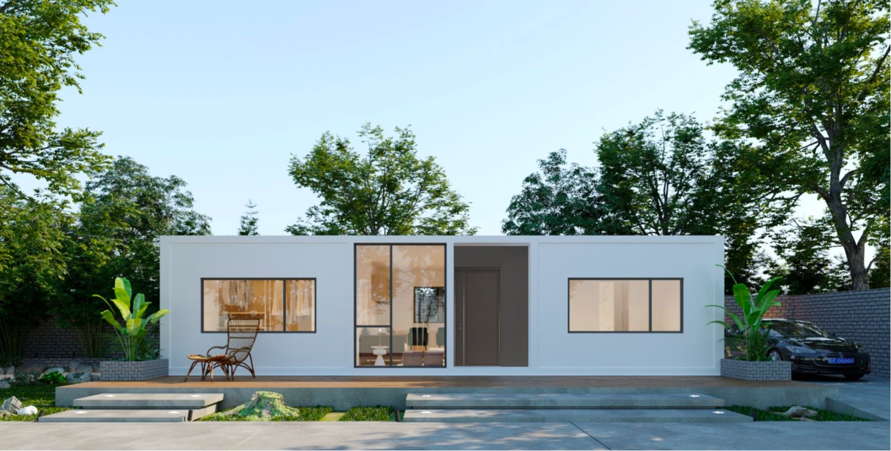
4. Cultural Tourism & Mixed-Use Rental Housing
Flexible modular systems have also been configured for boutique-style accommodations and short- or mid-term rental housing in:
- Cultural destinations
- Coastal zones / resorts
- Community tourism parks
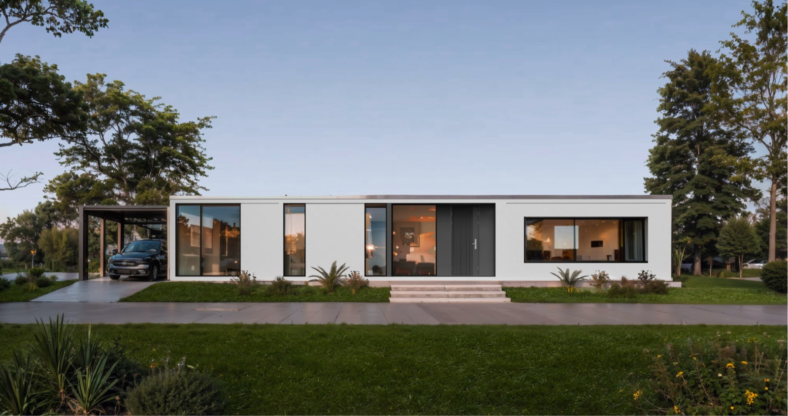
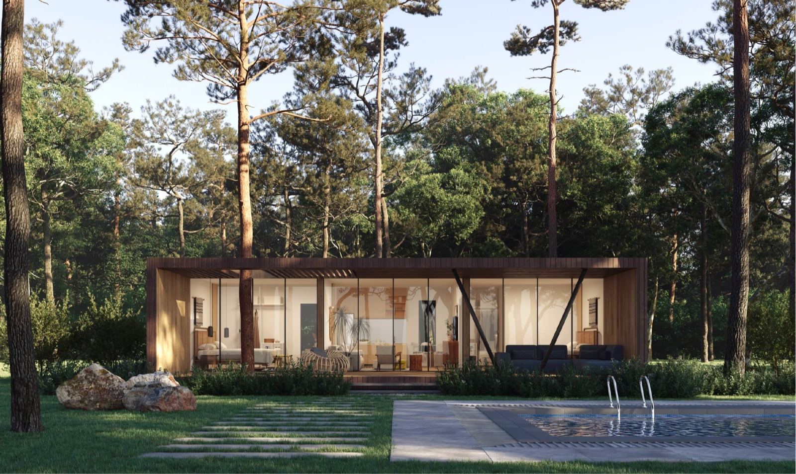
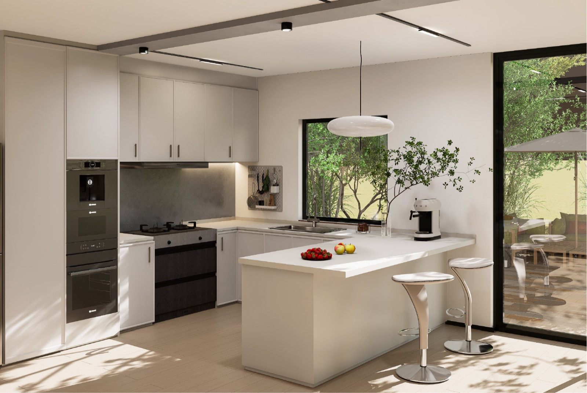
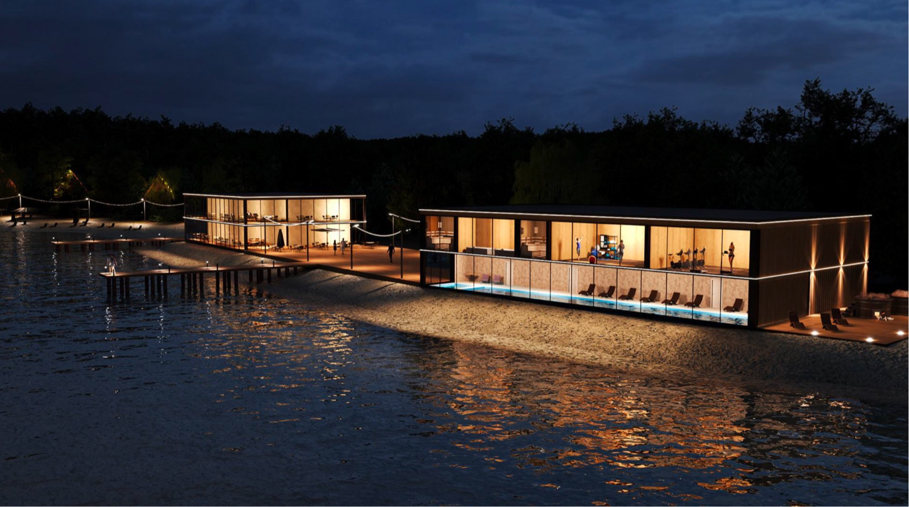
5. Comparative Performance Showcase: Modular vs Traditional
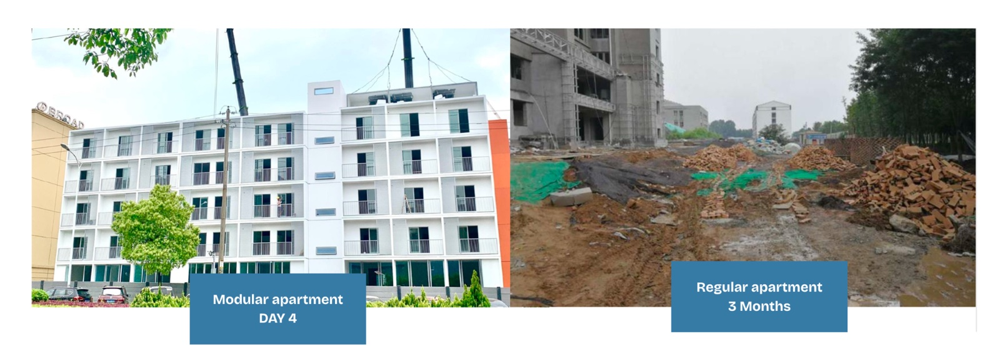
Visual comparisons readily demonstrate that PC apartment buildings:
- Deliver completed façades in clean and rapid fashion, at a fraction of the time of traditional construction methods
- Maintain aesthetic quality and layout consistency of the neighborhood during construction
- Outperform traditional methods simultaneously in terms of time, waste, and cost and aesthetics during each phase of construction
6. Technical System Performance Highlights
Before turning to the alternate we briefly review the technical properties of PC systems:
- Material Strength: Panels 5–7× stronger than traditional concrete, 1/3 of steel structure weight
- Thermal Insulation: Up to 90% energy savings with R=22 insulation performance
- Durability: Fire-resistant, anti-corrosion, seismic (8-grade), 100+ years lifespan
- Construction Speed: Up to 30× faster than conventional methods, as quick as 1 day per unit
- Labor Savings: Only 10% labor needed onsite
- Quality Control: Factory QA reduces defects, ensures delivery certainty
Having acquired a taste of the modular (box) profile, we now turn to an alternate construction methodology.
PC Prefabricated Construction
Definition: PC = Precast Concrete (sometimes broadened to "precast components"). Structural elements are cast in a controlled factory environment, cured, transported, and then assembled onsite.
Functional Characteristics:
- Component-Based: Produces discrete elements like slabs, beams, columns, wall panels, and staircases.
- On-Site Assembly Required: These elements must be lifted, aligned, and connected onsite (using grout, welding, or bolting).
- Speed: Faster than in-situ concrete because the casting and curing happen offsite.
- Flexibility: Architects/engineers can configure precast elements into many building typologies.
- Aesthetic & Structural Quality: Factory conditions improve quality control, surface finish, and strength.
- Integration: MEP and interiors are usually not pre-installed — integration happens onsite.
- Use Cases: Mid/high-rise towers, bridges, infrastructure, large housing developments needing repeatable structural parts.
Precast Concrete construction's targeted advantage include:
Government Requirement | PC Construction Response |
Speed | With 95% of construction completed in factory-controlled conditions and only 5% onsite, PC technology enables housing units to be delivered in weeks instead of months. |
Cost Control | Industrialized manufacturing reduces material waste and labor hours, offering consistent unit pricing at scale. |
Climate Adaptation | Minimal onsite work minimizes exposure to heat and sandstorms, supporting safer and more predictable delivery schedules. |
Scalability | PC systems allows rapid replication across multiple sites with minimal architectural redesign. |
Regulatory Simplicity | Precast concrete is a familiar, code-compliant material across the Middle East, streamlining government approval. |
Green Compliance | PC buildings feature low energy consumption, high assembly rates, and reliable factory-controlled quality — critical for sustainable urban planning. |
Common Use Cases for PC Construction
- Factory-optimized delivery meets rapid build requirements for high-volume housing commitments.
- Reduced on-site labor needs solve for skill shortages and minimize health risks.
- Standardized, replicable modules simplify planning and tendering, supporting swift rollout of thousands of units.
- Green manufacturing supports national sustainability agendas, with measurable reductions in energy use and carbon emissions.
- Designed for youth and workforce housing, PC apartments can flexibly adapt to the needs of government-run student housing and corporate workforce accommodation programs. They upgrade the quality of life for younger populations by integrating functional, compact, and durable designs.
Case Study Templates for PC Housing
- Single-Family Villa (60–80m2): Suitable for rural relocation projects and mobile subsidy pilots
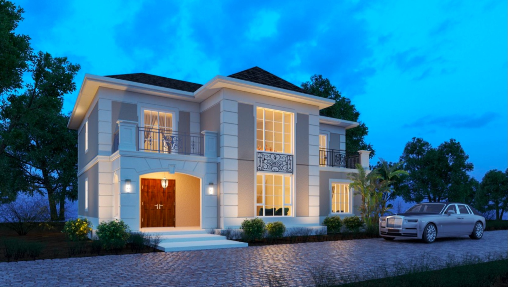
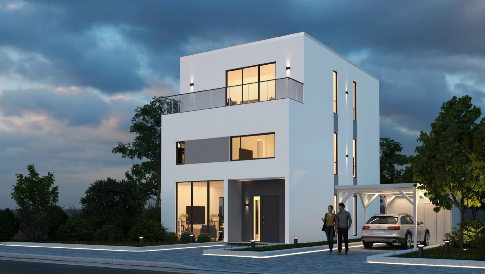
Description: Standalone concrete villa built in 14 days, ideal for small household relocation programs.
- Townhouse Row (80–120m2): Suburban family housing communities
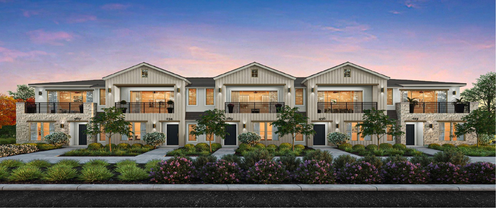
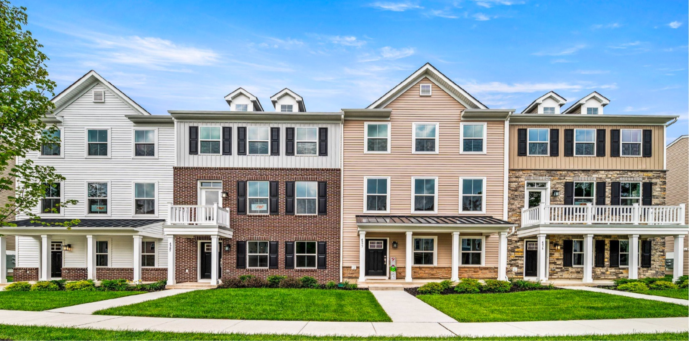
Description: Multi-unit, two-story row houses assembled from PC elements; ideal for public-private co-investment models.
- Student/Youth Housing Complex (30–50m2): Urban campuses or affordable university clusters
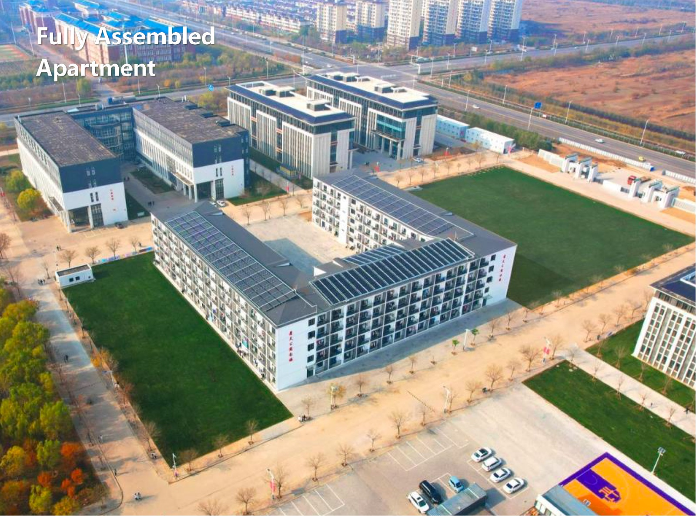 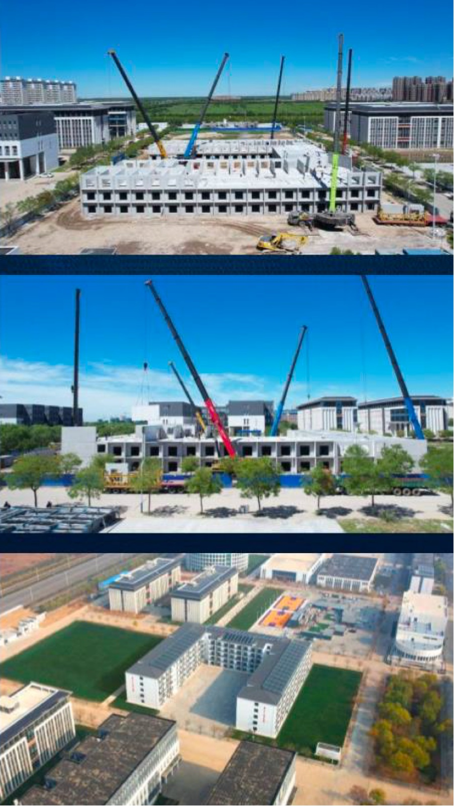
Description: Permanent housing complex using PC concrete system; high durability and reduced long-term maintenance.
Summary: A Flexible, Prefabricated Future
By embracing industrialized construction, Middle Eastern governments gain access to two highly effective systems — PC and Modular — that can be deployed based on the nature of the site, speed requirements, cost considerations, and long-term mobility needs.
Whether the objective is permanent urban housing, flexible student apartments, or rapid staff deployment centers, prefabricated systems offer:
- Reduced construction risks
- Better cost predictability
- Higher quality output
- Accelerated delivery timelines
- Compatibility with green and ESG goals
Our role is to provide consultation and implementation support to ensure the right prefabricated technology is applied to the right context — empowering governments to meet the region’s urgent and diverse housing goals.
PC vs Modular Construction: Technical Feature Comparison Table
Feature | Precast Concrete (PC) | BOX Modular (Plug-and-Play) |
Structural Material | Reinforced Concrete | Steel Frame + Integrated Panels |
Installation Speed | 14–20 days | <24 hours per unit |
MEP Integration | Onsite or semi-prefab | Fully pre-integrated in factory |
Insulation Performance | High | Very High |
Seismic / Fire Rating | Excellent | Good to Excellent |
Reusability | Low (Permanent Use) | High (Detachable Modules) |
Ideal Use Cases | Permanent housing, rural villa, relocation | Student housing, dorms, transitional spaces |
Lifespan | 100+ years | 30–50 years (depends on module type) |
Onsite Labor Required | Medium | Very Low |
Both systems can be adapted to suit the specific needs of local governments.
[1] Mechanical, Electrical & Plumbing
[2] In wide-ranging locations such as NYC, the UK and mainland China